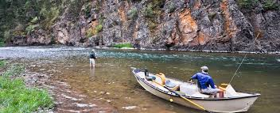

Blackfoot
Breath taking scenery, endless miles of recreation, and countless
numbers hungry fish make the Blackfoot River a premier fly fishing
destination. Beginning with the confluence of the North Fork near Ovando, MT,
and flowing into the Clark Fork River just a few miles outside of Missoula,
the Blackfoot did not gain its extreme popularity until the block buster movie,
A River Run's Through It was released in 1992. This movie convinced fly fishermen
from around the world to visit the Blackfoot river, and from then on out the
Blackfoot has been regarded as one of the most ideal fly fishing locations in the
world. There are opportunities for anglers of all skill levels on the Blackfoot as
the fish are not picky, and will readily eat the largest fly in your box on any
given day. While the epic streamer fishing and world famous salmonfly hatch are the
main talking points of the Blackfoot, there are prolific mayfly hatches, caddis
hatches, and a wide variety of terrestrials that fill the bellies of our trout.
